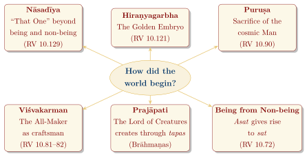
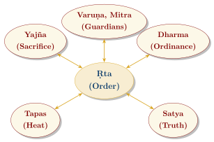
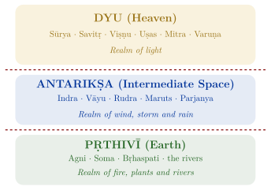

Chapter 13: The Vedic Worldview: Cosmology, Ṛta, Dharma, and the Devas¶
Invocatory Verse
iyaṃ visṛṣṭir yata ābabhūva
yadi vā dadhe yadi vā na
yo asyādhyakṣaḥ parame vyoman
so aṅga veda yadi vā na veda
Where this creation came from—whether it was made or not—
he who watches over it in the highest heaven surely knows;
or perhaps he does not know.
— Ṛgveda 10.129.7
13.1 Introduction¶
The Vedic texts do not present a single, systematic worldview. They span a millennium and many schools, from the hymns of the Ṛgveda, through the ritual theology of the Brāhmaṇas, to the speculations of the early Upaniṣads. Certain ideas, however, recur and develop across this literature: a world ordered by ṛta; gods who uphold that order and are sustained by sacrifice; a cosmos of three worlds; repeated attempts to imagine how the world began; and, increasingly, the search for a single principle behind the many. This chapter surveys these ideas, which shaped much of later Indian thought.
13.2 Vedic Cosmogony: The Origin of the World¶
The Vedas offer not one account of creation but several, often side by side. They are best read as different images for an acknowledged mystery rather than as competing doctrines (Figure 13.1).

13.2.1 The Nāsadīya Sūkta¶
The Nāsadīya Sūkta (RV 10.129) imagines a beginning before the distinction of being (sat) and non-being (asat), when “That One” breathed without wind, enveloped in darkness. It came into being through heat (tapas); desire (kāma) arose as the first seed of mind; and the poets, searching in their hearts, found the bond of being in non-being. The hymn ends in doubt: the gods are later than creation, and perhaps even the overseer in the highest heaven does not know how it arose (the final verse is quoted at the head of this chapter; the opening verse in Section 2.5).
13.2.2 The Hiraṇyagarbha and Viśvakarman Hymns¶
RV 10.121 describes a Golden Embryo that arose in the beginning, became the lord of all that exists, and established earth and sky. RV 10.81–82 imagine the god Viśvakarman (“All-Maker”) as a craftsman, asking from what wood and what tree he fashioned heaven and earth.
13.2.3 The Puruṣa Sūkta¶
RV 10.90 describes the world as produced from the sacrifice of a cosmic Man, a quarter of whom is all beings while three quarters are immortal in heaven. From his mind came the moon, from his eye the sun, from his breath the wind; and from his mouth, arms, thighs and feet the four social classes (Section 2.5.3). This hymn joins cosmogony to a theory of social hierarchy, a combination of lasting consequence.
13.2.4 Prajāpati¶
In the Brāhmaṇas the creator Prajāpati produces the world by heating himself with tapas and “emitting” creatures, and is then restored through the sacrifice (Chapter 6). In the early Upaniṣads these images give way to the idea of a single self or Brahman from which all things proceed (Bṛhadāraṇyaka Upaniṣad 1.4; Chāndogya Upaniṣad 6.2).
13.3 Ṛta: Cosmic Order¶
Ṛta, usually derived from the root ṛ, “to fit, to go”, denotes the order of the world: what is fitting and true. It works at several levels:
-
Cosmic: the regular rising of the sun and of the dawns, the course of the seasons, the flowing of rivers.
-
Ritual: the correct performance of the sacrifice, which supports the cosmic order.
-
Moral: truthfulness and the keeping of agreements.
The Path of Ṛta
ṛtasya panthām anv eti sādhu
prajānatīva na diśo mināti
She follows straight the path of ṛta;
like one who knows the way, she does not stray from the directions.
— Ṛgveda 1.124.3 (of Dawn)
Ṛta is guarded above all by Varuṇa and Mitra, the gods of oath and contract. Its opposite, anṛta, is falsehood and disorder. The concept has an exact Avestan counterpart, aša, so it goes back to the common Indo-Iranian period (Figure 13.2). Varuṇa watches human conduct through his spies (spaś), and his punishment for wrongdoing is the theme of some of the most personal hymns of the Ṛgveda, in which the poet Vasiṣṭha asks what offence he has committed (RV 7.86–89). Table 13.1 gives some key passages on ṛta and truth (satya) across the Vedic literature.
| Text | Reference | Content |
|---|---|---|
| Ṛgveda | 1.1.8 | Agni as “guardian of ṛta” (gopām ṛtasya) |
| Ṛgveda | 10.190.1 | Ṛta and satya born from kindled heat (tapas) |
| Atharvaveda | 12.1.1 | Truth, ṛta, consecration, tapas, brahman and sacrifice “uphold the earth” |
| Śatapatha Brāhmaṇa | 1.1.1.4 | “The gods are truth, men are untruth”: the sacrificer takes a vow of truth |
| Bṛhadāraṇyaka Upaniṣad | 1.4.14 | Dharma is identified with truth (satya) |

13.4 From Ṛta to Dharma¶
The word dharman (from dhṛ, “to hold, support”) already occurs in the Ṛgveda, meaning “foundation” or “ordinance”. In later Vedic and post-Vedic thought, dharma gradually replaces ṛta as the key term for order. Its meaning widens to include the duties proper to each social class and stage of life (varṇāśramadharma), religious law, and righteousness in general. The Bṛhadāraṇyaka Upaniṣad (1.4.14) describes dharma as a power higher even than royal power, “through which a weak man prevails over a strong one, as with the help of a king”, and identifies it with truth: “what is dharma is truth” (yo vai sa dharmaḥ satyaṃ vai tat). In the Dharma Sūtras and Śāstras it becomes the framework of a hierarchical social and legal order; Buddhists and Jains, meanwhile, used the same word for the teaching of the Buddha or the Jina.
13.5 The Nature of the Devas¶
The Vedic gods (devas, “heavenly ones”) are powerful beings, many of them closely linked with natural phenomena (fire, sun, dawn, wind, storm), others with social functions (Mitra with contract, Aryaman with hospitality and marriage) or with the ritual (Soma, Bṛhaspati). They are invited to the sacrifice, praised, given offerings, and asked for wealth, offspring, victory and protection.
13.5.1 The Three Worlds¶
The Ṛgvedic universe consists of three worlds: earth (pṛthivī), the intermediate space (antarikṣa) and heaven (dyu). Yāska later classified the gods according to these three realms (Section 2.17); Figure 13.3 follows the simpler modern grouping of Macdonell, which differs from Yāska’s lists in some details.

13.5.2 One and Many¶
Beyond the habit of praising whichever god is addressed as supreme, which Max Müller called “henotheism” (Section 2.17), a few late hymns go further and speak of the many gods as names of one being (ekaṃ sad viprā bahudhā vadanti, RV 1.164.46) or of a single creator. Later Indian thinkers read these passages as the seed of Vedāntic monism or of monotheism; historians emphasise that they are exceptional within the Vedic corpus as a whole.
13.5.3 Devas and Asuras¶
The later opposition between gods (devas) and demons (asuras) is not found in the oldest hymns. In the family books asura is a title of honour, meaning something like “lord” or “one possessing mysterious power”, and it is given above all to Varuṇa and Mitra, but also to Agni, Indra, Dyaus and other gods. Its Avestan cognate ahura became the name of the supreme god of Zoroastrianism, Ahura Mazdā, while the Avestan daēvas, cognate with the Vedic devas, became demons (Table 1.3). In the later books of the Ṛgveda and in the Atharvaveda the word increasingly designates the enemies of the gods, and in the Brāhmaṇas the contest between the gods and the Asuras, “both offspring of Prajāpati” (BU 1.3.1), is the frame of countless explanatory stories (Section 6.4). Wash Edward Hale’s study of the word traced this shift and argued that in the oldest hymns asura is a title, “lord”, given to gods and occasionally to men, not the name of a separate class of beings (Hale 1986).
The reasons for the reversal in each tradition are debated. Older scholars imagined a religious schism between proto-Indians and proto-Iranians, each demonising the other’s gods; most scholars now regard that as too simple, and see the change in India as a gradual narrowing of the term within Vedic usage. The outcome had a long future. The serpent Vṛtra’s mother is Dānu (RV 1.32.9), and her descendants, the Dānavas, together with the Daityas, the sons of Diti, form the Asura armies of the epics and Purāṇas, the opponents of the gods in the churning of the ocean and many other myths (Volume 7, Itihāsa–Purāṇa). The Purāṇas also preserve, in figures such as the virtuous Asura kings Prahlāda and Bali, a memory that the Asuras could be wise, generous and devout.
13.6 Key Concepts¶
13.6.1 Ātman and Brahman¶
In the Ṛgveda, ātman means “breath” or “self”, and brahman means a sacred formulation and the power inherent in it. In the Brāhmaṇas and especially the early Upaniṣads, these words become the central terms of philosophy: ātman the innermost self of a person, brahman the ultimate reality. Several Upaniṣadic passages identify the two; schools of Vedānta later interpreted this identity in different ways, from strict non-dualism (Advaita) to qualified non-dualism and dualism.
13.6.2 Tapas¶
Tapas (“heat”) is both the cosmic energy through which the world arises and the inner heat generated by ascetic effort. In the Nāsadīya Sūkta the first being comes into existence through it (tapasas tan mahinājāyataikam, “That One was born by the power of heat”, RV 10.129.3), and in RV 10.190.1 ṛta and satya are born “from kindled heat” (abhīddhāt tapaso ’dhy ajāyata). In the Brāhmaṇas the creator Prajāpati repeatedly “heats himself” before each act of creation, and the sacrificer undergoes austerities during his consecration (dīkṣā). The double meaning of the word links cosmogony and ritual with the ascetic practices that became central in later Indian religion.
13.6.3 Kāma¶
In RV 10.129.4 desire (kāma) is the first seed of mind, the impulse that begins creation. The idea of desire as a creative and binding force recurs in the Upaniṣads and in later philosophy.
13.6.4 Yajña¶
In Vedic thought the sacrifice is an exchange: offerings nourish the gods, who in turn grant rain, cattle, offspring and prosperity. The Brāhmaṇas extend this into the idea that the sacrifice sustains the cosmos, and the Bhagavadgītā (3.10–16) later describes a “wheel” of sacrifice linking gods, rain, food and human beings.
13.7 Death and the Afterlife¶
The funeral hymns of the Ṛgveda (10.14–18) give the earliest Indian picture of death. Yama, the first mortal to die, found the path to the world beyond and became king of the dead; the deceased goes along this path to join Yama and the “Fathers” (pitṛs) in the highest heaven, where they enjoy food and drink offered by their descendants. Both cremation, in which Agni carries the dead to the Fathers (RV 10.16), and burial, in which the Earth is asked to cover the dead gently “as a mother covers her son with her skirt” (RV 10.18.11), are attested. The living maintain the dead through offerings, a practice that continues in the later śrāddha rites.
The Ṛgveda has no clear doctrine of rebirth. In the Brāhmaṇas a new fear appears, of “re-death” (punarmṛtyu) in the other world, which correct ritual knowledge can avert. The doctrine of rebirth according to one’s actions (karma) and of release from the cycle first appears clearly in the early Upaniṣads: in the Bṛhadāraṇyaka Upaniṣad, Yājñavalkya teaches that “as one acts, so one becomes” (BU 4.4.5), and the “doctrine of the five fires” with its two paths of the dead (BU 6.2; ChU 5.3–10) is presented as a teaching of Kṣatriya kings, previously unknown to Brahmins. Whether these ideas grew out of Vedic ritual thought, came from other religious milieus of the eastern Ganga plain, or both, is debated. Either way, the idea of rebirth and liberation, which was to dominate later Hindu, Buddhist and Jain thought, takes shape at the very end of the Vedic period.
13.8 Time¶
Vedic texts measure time by days and nights, the phases of the moon, the seasons and the year, and the ritual calendar follows these cycles. The great cosmic cycles of four ages (yugas) of declining virtue, and of aeons (kalpas) of creation and dissolution, are not Vedic: they are developed in the epics and Purāṇas. In Vedic texts yuga means a generation or, in the Vedāṅga Jyotiṣa, a five-year cycle, while the names kṛta, tretā, dvāpara and kali are those of throws in the game of dice.
13.9 Correspondences and Interconnection¶
A characteristic feature of Vedic thought, especially from the Brāhmaṇas onwards, is the search for correspondences (bandhus) between the cosmos, the ritual and the human person. The Upaniṣads describe these as relations between the “divine” (adhidaivata) and the “bodily” (adhyātma) domains (Table 13.2).
| Cosmic | Bodily | Example of Source |
|---|---|---|
| Sun | Eye | RV 10.90.13 (the sun born from the eye of Puruṣa) |
| Moon | Mind | RV 10.90.13 (the moon born from his mind) |
| Wind | Breath | RV 10.90.13; Aitareya Upaniṣad 1.2.4 |
| Fire | Speech | Aitareya Upaniṣad 1.2.4 (“Fire became speech and entered the mouth”) |
| Waters | Semen | Aitareya Upaniṣad 1.2.4 |
| Quarters of space | Ears | Aitareya Upaniṣad 1.2.4 |
These correspondences imply that the person is a small-scale image of the cosmos, and that to know oneself is in some sense to know the world. The Upaniṣads carry this to the conclusion that the inner self and the ground of the world are one.
The ritual ground was read in the same way, as a model of the universe. The three sacred fires were correlated with earth, the intermediate space and heaven; the five layers of the Agnicayana altar with the seasons and other fivefold groups; and the numbers of its bricks and enclosing stones with the days, nights and divisions of the year (Staal 1983). The altar and its geometry are described in Section 3.10, and the Śulbasūtras that codify that geometry in Section 7.7.
13.10 Nature in the Vedic Texts¶
The Vedic hymns address many natural powers—earth and sky, the waters, rivers, dawn, sun, wind and fire—as divine (Table 13.3). The best known of these hymns is the Pṛthivī Sūkta of the Atharvaveda, with its line “The Earth is my mother; I am the son of the Earth” (AV 12.1.12), which is discussed in Section 5.4.
| Theme | Text | Content |
|---|---|---|
| Earth as mother | AV 12.1 (Pṛthivī Sūkta) | The earth as sustainer of all beings; prayer that what is dug from her may grow again (12.1.35) |
| Waters | RV 7.49 | The divine Waters, purifying and healing |
| Rivers | RV 10.75 (Nadīstuti) | Praise of the rivers of the north-west |
| Forest | RV 10.146 (Araṇyānī) | The goddess of the wilderness |
| Sun | RV 1.115; 3.62.10 | Sūrya and Savitṛ as the source of light and life |
Modern writers often draw environmental lessons from such hymns, and the reverence they express is real. Two cautions are needed. The hymns are religious, not ecological, texts: they ask the gods for rain, cattle, sons and victory, and the Vedic economy cleared forest by fire for cultivation (the Śatapatha Brāhmaṇa’s story of Agni Vaiśvānara burning his way eastward across the land is often read as a memory of this, ŚB 1.4.1.10–17). And the Vedic sacrifice included animal sacrifice. The cycle of offering and rain later formulated in the Bhagavadgītā (3.14–16) is a theology of reciprocity between gods and humans, not an anticipation of modern ecology.
13.11 Summary¶
No single Vedic world-view emerges from these texts, but a direction of thought does. The hymns imagine the world as an order upheld by many gods and renewed by sacrifice, and they already wonder whether anyone knows how it began. The Brāhmaṇas turn that order into a system of correspondences that the ritualist can know and use; the Upaniṣads ask what single reality lies behind all the correspondences, and find it in the self. The same movement helps to explain why ṛta gave way to dharma, why the gods came to be ranked below brahman, and why the ideas of rebirth and liberation, formed at the very end of the period, could be taken up by traditions that rejected the authority of the Veda itself.
Closing Meditation
pūrṇam adaḥ pūrṇam idaṃ pūrṇāt pūrṇam udacyate
pūrṇasya pūrṇam ādāya pūrṇam evāvaśiṣyate
That is full; this is full. From the full, the full is drawn out.
When the full is taken from the full, the full alone remains.
— Bṛhadāraṇyaka Upaniṣad 5.1.1